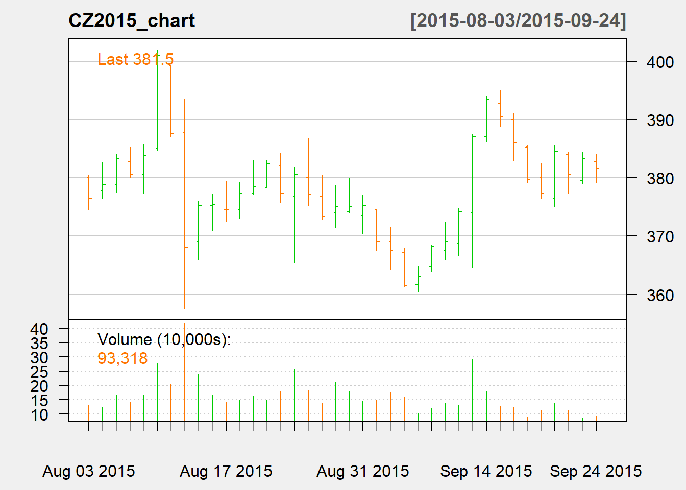
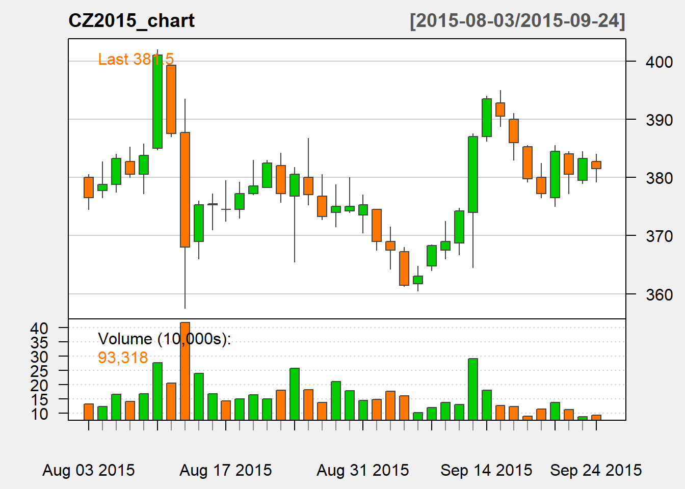

Chapter 18 Appendix: Data and Visualization
This chapter reviews the basics of the presentation of economic data, descriptive statistics, visualizations based on charts, graphs, and tables, and the math and mechanics of estimating trend forecasting models. There are three main types of data sets one might encounter: cross section, time-series, and panel.
- Cross section
Cross section data contain many observations of one (or several) variables at the same point in time. The Motor Trend gas mileage data set is an example. R. Hocking gathered road test results reported in the March, April, June, and July issues of Motor Trend Magazine (Hocking 1976). The full data set is reproduced in Table 1.
Table 1: Motor Trend Cars Data set - 1973/1974
MPG Cyli nders Engi ne Size (cubic in) Hors e Power Fina l Drive Ratio Weig ht Quar ter Mile Time (secs) Engi ne Shape, Verticle/Straight Auto matic/Manual Gear s Carb orators Mazda RX4 21.0 6 160.0 110 3.90 2.620 16.46 0 1 4 4 Mazda RX4 Wag 21.0 6 160.0 110 3.90 2.875 17.02 0 1 4 4 Datsun 710 22.8 4 108.0 93 3.85 2.320 18.61 1 1 4 1 Hornet 4 Drive 21.4 6 258.0 110 3.08 3.215 19.44 1 0 3 1 Hornet Sportabout 18.7 8 360.0 175 3.15 3.440 17.02 0 0 3 2 Valiant 18.1 6 225.0 105 2.76 3.460 20.22 1 0 3 1 Duster 360 14.3 8 360.0 245 3.21 3.570 15.84 0 0 3 4 Merc 240D 24.4 4 146.7 62 3.69 3.190 20.00 1 0 4 2 Merc 230 22.8 4 140.8 95 3.92 3.150 22.90 1 0 4 2 Merc 280 19.2 6 167.6 123 3.92 3.440 18.30 1 0 4 4 Merc 280C 17.8 6 167.6 123 3.92 3.440 18.90 1 0 4 4 Merc 450SE 16.4 8 275.8 180 3.07 4.070 17.40 0 0 3 3 Merc 450SL 17.3 8 275.8 180 3.07 3.730 17.60 0 0 3 3 Merc 450SLC 15.2 8 275.8 180 3.07 3.780 18.00 0 0 3 3 Cadillac Fleetwood 10.4 8 472.0 205 2.93 5.250 17.98 0 0 3 4 Lincoln Continental 10.4 8 460.0 215 3.00 5.424 17.82 0 0 3 4 Chrysler Imperial 14.7 8 440.0 230 3.23 5.345 17.42 0 0 3 4 Fiat 128 32.4 4 78.7 66 4.08 2.200 19.47 1 1 4 1 Honda Civic 30.4 4 75.7 52 4.93 1.615 18.52 1 1 4 2 Toyota Corolla 33.9 4 71.1 65 4.22 1.835 19.90 1 1 4 1 Toyota Corona 21.5 4 120.1 97 3.70 2.465 20.01 1 0 3 1 Dodge Challenger 15.5 8 318.0 150 2.76 3.520 16.87 0 0 3 2 AMC Javelin 15.2 8 304.0 150 3.15 3.435 17.30 0 0 3 2 Camaro Z28 13.3 8 350.0 245 3.73 3.840 15.41 0 0 3 4 Pontiac Firebird 19.2 8 400.0 175 3.08 3.845 17.05 0 0 3 2 Fiat X1-9 27.3 4 79.0 66 4.08 1.935 18.90 1 1 4 1 Porsche 914-2 26.0 4 120.3 91 4.43 2.140 16.70 0 1 5 2 Lotus Europa 30.4 4 95.1 113 3.77 1.513 16.90 1 1 5 2 Ford Pantera L 15.8 8 351.0 264 4.22 3.170 14.50 0 1 5 4 Ferrari Dino 19.7 6 145.0 175 3.62 2.770 15.50 0 1 5 6 Maserati Bora 15.0 8 301.0 335 3.54 3.570 14.60 0 1 5 8 Volvo 142E 21.4 4 121.0 109 4.11 2.780 18.60 1 1 4 2
Source: (Hocking 1976) Road test results as conducted by Motor Trend Magazine for 1973-1974 automobiles.
- Time Series
Time series data record observations of the same variable in different points in time. Price analysis and forecasting tends to use time-series the most. Table 2 contains a familiar time series data set taken from USDA NASS for corn acres planted, acres harvested, prices received by farmers, and yield. It is a multi-variate time-series data set because we see one observation for each variable once per time period.
Table 2: Corn Acres Planted, Acres Harvested, Prices Received by Farmers, and Yield
| Year | US.CORN.ACRES.PLANTED | US.CORN.ACRES.HARVESTED | CORN.GRAIN..PRICE.RECEIVED | CORN.YIELD |
|---|---|---|---|---|
| 2014 | 90,597,000 | 83,136,000 | 4.11 | 171.0 |
| 2013 | 95,365,000 | 87,451,000 | 6.15 | 158.1 |
| 2012 | 97,291,000 | 87,365,000 | 6.67 | 123.1 |
| 2011 | 91,936,000 | 83,879,000 | 6.02 | 146.8 |
| 2010 | 88,192,000 | 81,446,000 | 3.83 | 152.6 |
| 2009 | 86,382,000 | 79,490,000 | 3.75 | 164.4 |
| 2008 | 85,982,000 | 78,570,000 | 4.78 | 153.3 |
| 2007 | 93,527,000 | 86,520,000 | 3.39 | 150.7 |
| 2006 | 78,327,000 | 70,638,000 | 2.28 | 149.1 |
| 2005 | 81,779,000 | 75,117,000 | 1.96 | 147.9 |
| 2004 | 80,929,000 | 73,631,000 | 2.47 | 160.3 |
| 2003 | 78,603,000 | 70,944,000 | 2.27 | 142.2 |
| 2002 | 78,894,000 | 69,330,000 | 2.13 | 129.3 |
| 2001 | 75,702,000 | 68,768,000 | 1.89 | 138.2 |
| 2000 | 79,551,000 | 72,440,000 | 1.86 | 136.9 |
| 1999 | 77,386,000 | 70,487,000 | 1.89 | 133.8 |
| 1998 | 80,165,000 | 72,589,000 | 2.20 | 134.4 |
| 1997 | 79,537,000 | 72,671,000 | 2.60 | 126.7 |
| 1996 | 79,229,000 | 72,644,000 | 3.55 | 127.1 |
| 1995 | 71,479,000 | 65,210,000 | NA | 113.5 |
| 1994 | 78,921,000 | 72,514,000 | NA | 138.6 |
| 1993 | 73,239,000 | 62,933,000 | NA | 100.7 |
| 1992 | 79,311,000 | 72,077,000 | NA | 131.5 |
| 1991 | 75,957,000 | 68,822,000 | NA | 108.6 |
| 1990 | 74,166,000 | 66,952,000 | NA | 118.5 |
| 1989 | 72,322,000 | 64,783,000 | NA | 116.3 |
| 1988 | 67,717,000 | 58,250,000 | NA | 84.6 |
| 1987 | 66,200,000 | 59,505,000 | NA | 119.8 |
| 1986 | 76,580,000 | 68,907,000 | NA | 119.4 |
| 1985 | 83,398,000 | 75,209,000 | NA | 118.0 |
| 1984 | 80,517,000 | 71,897,000 | NA | 106.7 |
| 1983 | 60,207,000 | 51,479,000 | NA | 81.1 |
| 1982 | 81,857,000 | 72,719,000 | NA | 113.2 |
| 1981 | 84,097,000 | 74,524,000 | NA | 108.9 |
| 1980 | 84,043,000 | 72,961,000 | NA | 91.0 |
Source: USDA NASS 1980 - 2014
Table 3 below is another example of a time series. These are daily corn futures open, high, low, last, change, settle, volume, and open interest data. Again, one observation of each variable per unit of time. In this case, time units are days.
| Date | Open | High | Low | Last | Change | Settle | Volume | Open.Interest |
|---|---|---|---|---|---|---|---|---|
| 9/24/2015 | 382.75 | 384.00 | 379.25 | 382.00 | 1.75 | 381.50 | 93318 | 744856 |
| 9/23/2015 | 379.50 | 384.50 | 379.00 | 383.00 | 2.75 | 383.25 | 88046 | 742718 |
| 9/22/2015 | 384.00 | 384.50 | 377.25 | 380.00 | 4.00 | 380.50 | 113398 | 741798 |
| 9/21/2015 | 376.50 | 385.50 | 375.00 | 384.50 | 7.25 | 384.50 | 138157 | 734466 |
| 9/18/2015 | 380.00 | 382.50 | 376.50 | 377.25 | 2.50 | 377.25 | 113972 | 730920 |
| 9/17/2015 | 385.25 | 385.50 | 379.25 | 380.50 | 6.25 | 379.75 | 89428 | 734898 |
| 9/16/2015 | 390.00 | 391.00 | 383.00 | 385.50 | 4.50 | 386.00 | 124073 | 744460 |
| 9/15/2015 | 392.75 | 395.00 | 388.75 | 390.50 | 3.00 | 390.50 | 127023 | 744535 |
| 9/14/2015 | 387.00 | 394.00 | 386.25 | 393.00 | 6.50 | 393.50 | 179626 | 755065 |
| 9/11/2015 | 374.00 | 387.50 | 364.50 | 387.00 | 12.75 | 387.00 | 291726 | 764709 |
| 9/10/2015 | 368.75 | 374.75 | 366.75 | 374.00 | 5.25 | 374.25 | 131271 | 759367 |
| 9/9/2015 | 367.50 | 372.50 | 366.00 | 368.50 | 0.75 | 369.00 | 137640 | 758327 |
| 9/8/2015 | 364.75 | 368.50 | 364.00 | 368.25 | 5.25 | 368.25 | 119124 | 760629 |
| 9/4/2015 | 361.75 | 364.75 | 360.50 | 362.50 | 1.50 | 363.00 | 101487 | 761295 |
| 9/3/2015 | 367.25 | 368.00 | 361.25 | 361.50 | 6.00 | 361.50 | 160695 | 763799 |
| 9/2/2015 | 369.00 | 371.50 | 364.25 | 367.25 | 1.50 | 367.50 | 177613 | 763314 |
| 9/1/2015 | 374.50 | 374.50 | 367.50 | 368.25 | 6.25 | 369.00 | 148934 | 753344 |
| 8/31/2015 | 373.50 | 377.00 | 370.50 | 375.25 | 0.25 | 375.25 | 145008 | 753722 |
| 8/28/2015 | 374.25 | 380.00 | 374.00 | 374.25 | NA | 375.00 | 179337 | 758192 |
| 8/27/2015 | 374.00 | 378.75 | 371.50 | 374.50 | 1.75 | 375.00 | 210682 | 760048 |
| 8/26/2015 | 376.75 | 380.50 | 372.75 | 373.25 | 3.75 | 373.25 | 137052 | 758226 |
| 8/25/2015 | 380.00 | 386.75 | 375.25 | 377.75 | 3.50 | 377.00 | 182215 | 761721 |
| 8/24/2015 | 376.75 | 381.75 | 365.50 | 381.50 | 3.25 | 380.50 | 258076 | 755009 |
| 8/21/2015 | 382.00 | 384.25 | 375.75 | 377.00 | 5.25 | 377.25 | 181246 | 750472 |
| 8/20/2015 | 378.25 | 383.00 | 378.25 | 382.75 | 4.00 | 382.50 | 150931 | 744502 |
| 8/19/2015 | 377.25 | 383.00 | 377.00 | 378.50 | 1.25 | 378.50 | 164492 | 746798 |
| 8/18/2015 | 374.50 | 379.25 | 373.00 | 377.00 | 2.75 | 377.25 | 150640 | 746400 |
| 8/17/2015 | 374.50 | 379.50 | 372.50 | 375.00 | 1.00 | 374.50 | 143336 | 743379 |
| 8/14/2015 | 375.25 | 377.25 | 371.00 | 375.00 | 0.25 | 375.50 | 167134 | 732960 |
| 8/13/2015 | 369.00 | 376.00 | 366.00 | 375.25 | 7.25 | 375.25 | 239077 | 707171 |
| 8/12/2015 | 387.75 | 393.50 | 357.50 | 369.75 | 19.50 | 368.00 | 418025 | 675503 |
| 8/11/2015 | 399.25 | 399.25 | 387.00 | 388.25 | 13.50 | 387.50 | 205087 | 661298 |
| 8/10/2015 | 385.00 | 402.00 | 384.75 | 401.00 | 17.25 | 401.00 | 276157 | 641045 |
| 8/7/2015 | 380.50 | 385.75 | 377.25 | 384.00 | 3.25 | 383.75 | 168547 | 623721 |
| 8/6/2015 | 382.75 | 385.25 | 380.00 | 380.00 | 2.75 | 380.50 | 141927 | 617120 |
| 8/5/2015 | 378.75 | 384.00 | 377.50 | 383.25 | 4.50 | 383.25 | 166401 | 605977 |
| 8/4/2015 | 377.75 | 382.75 | 376.50 | 379.00 | 2.25 | 378.75 | 123244 | 607654 |
| 8/3/2015 | 380.00 | 380.50 | 374.50 | 378.75 | 4.75 | 376.50 | 131415 | 602431 |
Source: Quandl.com
Futures price data are often delivered including open, high, low, and close prices because with those four one can create special graphs typical in displaying financial price information.
Figure 1: December Corn Futures Prices - Bars

Source: Quandl.com Figures created with the quantmod package in R.
Figure 2: December Corn Futures Prices - Candlesticks

Source: Quandl.com Figures created with the quantmod package in R.
Microsoft Excel can produce financial prices using with open, high, low, close, and volume data as well.
18 Steps to Produce Candlestick, Matchsticks, and other Financial Charts in Microsoft Excel
- Make sure the data is arranged with volume first, then open, high, low, and close prices
- Highlight the Volume, Open, High, Low, Close columns.
- Select the Insert tab and expand the Charts group.
- Under All Charts click the Stock grouping.
- Choose the Volume, Open, High, Low, Close chart type.
Figure 3: December Corn Futures Prices in Microsoft Excel 
Statistical analyses of time series data are often complicated by issues such as auto-correlation, heteroskedasticity, and non-stationarity. These statistical issues should be accounted for when conducting more advanced time-series based forecasting exercises. We will touch on these issues in later chapters when econometric forecasting is covered in more detail.
18.1 Data Preparation
Unlike previous statistics classes you may have had, where clean data sets are given to you to illustrate various statistical concepts. Data preparation is a key step in conducting price analysis or a forecasting exercise in real-world contexts. You may be gathering data from different sources, with different time units, different degrees of missing data, and different tendencies toward statistical problems. Each forecasting exercise requires an assessment of what needs to be done to clean the data and prepare it for your analysis.
18.1.1 Data Cleaning
Before using data for forecasting purposes, you must have a good understanding of how the data were collected and for what purpose. Errors during data recording can happen, and it is essential to catch them before you begin a forecasting exercise . Taking business decisions based on erroneous data will be a costly lesson. Since price forecasters rarely participate in the data collection process price data can be susceptible to errors.
The most useful technique to quickly spot data encoding errors is to plot the data. Its a pretty low-tech technique, but when there is an error, this can be the most efficient way to spot it. Table 4 below reproduces table 3, but with on encoding error. Can you spot it?
| Date | Open | High | Low | Last | Change | Settle | Volume | Open.Interest |
|---|---|---|---|---|---|---|---|---|
| 9/24/2015 | 382.75 | 384.00 | 379.25 | 382.00 | 1.75 | 381.50 | 93318 | 744856 |
| 9/23/2015 | 379.50 | 384.50 | 379.00 | 383.00 | 2.75 | 383.25 | 88046 | 742718 |
| 9/22/2015 | 384.00 | 384.50 | 377.25 | 380.00 | 4.00 | 380.50 | 113398 | 741798 |
| 9/21/2015 | 376.50 | 385.50 | 375.00 | 384.50 | 7.25 | 384.50 | 138157 | 734466 |
| 9/18/2015 | 380.00 | 382.50 | 376.50 | 377.25 | 2.50 | 377.25 | 113972 | 730920 |
| 9/17/2015 | 385.25 | 385.50 | 379.25 | 380.50 | 6.25 | 379.75 | 89428 | 734898 |
| 9/16/2015 | 390.00 | 391.00 | 383.00 | 385.50 | 4.50 | 386.00 | 124073 | 744460 |
| 9/15/2015 | 392.75 | 395.00 | 388.75 | 390.50 | 3.00 | 390.50 | 127023 | 744535 |
| 9/14/2015 | 387.00 | 394.00 | 386.25 | 393.00 | 6.50 | 393.50 | 179626 | 755065 |
| 9/11/2015 | 374.00 | 387.50 | 364.50 | 387.00 | 12.75 | 387.00 | 291726 | 764709 |
| 9/10/2015 | 368.75 | 374.75 | 366.75 | 374.00 | 5.25 | 374.25 | 131271 | 759367 |
| 9/9/2015 | 367.50 | 372.50 | 366.00 | 368.50 | 0.75 | 369.00 | 137640 | 758327 |
| 9/8/2015 | 364.75 | 368.50 | 364.00 | 368.25 | 5.25 | 368.25 | 119124 | 760629 |
| 9/4/2015 | 361.75 | 364.75 | 360.50 | 362.50 | 1.50 | 3630.00 | 101487 | 761295 |
| 9/3/2015 | 367.25 | 368.00 | 361.25 | 361.50 | 6.00 | 361.50 | 160695 | 763799 |
| 9/2/2015 | 369.00 | 371.50 | 364.25 | 367.25 | 1.50 | 367.50 | 177613 | 763314 |
| 9/1/2015 | 374.50 | 374.50 | 367.50 | 368.25 | 6.25 | 369.00 | 148934 | 753344 |
| 8/31/2015 | 373.50 | 377.00 | 370.50 | 375.25 | 0.25 | 375.25 | 145008 | 753722 |
| 8/28/2015 | 374.25 | 380.00 | 374.00 | 374.25 | NA | 375.00 | 179337 | 758192 |
| 8/27/2015 | 374.00 | 378.75 | 371.50 | 374.50 | 1.75 | 375.00 | 210682 | 760048 |
| 8/26/2015 | 376.75 | 380.50 | 372.75 | 373.25 | 3.75 | 373.25 | 137052 | 758226 |
| 8/25/2015 | 380.00 | 386.75 | 375.25 | 377.75 | 3.50 | 377.00 | 182215 | 761721 |
| 8/24/2015 | 376.75 | 381.75 | 365.50 | 381.50 | 3.25 | 380.50 | 258076 | 755009 |
| 8/21/2015 | 382.00 | 384.25 | 375.75 | 377.00 | 5.25 | 377.25 | 181246 | 750472 |
| 8/20/2015 | 378.25 | 383.00 | 378.25 | 382.75 | 4.00 | 382.50 | 150931 | 744502 |
| 8/19/2015 | 377.25 | 383.00 | 377.00 | 378.50 | 1.25 | 378.50 | 164492 | 746798 |
| 8/18/2015 | 374.50 | 379.25 | 373.00 | 377.00 | 2.75 | 377.25 | 150640 | 746400 |
| 8/17/2015 | 374.50 | 379.50 | 372.50 | 375.00 | 1.00 | 374.50 | 143336 | 743379 |
| 8/14/2015 | 375.25 | 377.25 | 371.00 | 375.00 | 0.25 | 375.50 | 167134 | 732960 |
| 8/13/2015 | 369.00 | 376.00 | 366.00 | 375.25 | 7.25 | 375.25 | 239077 | 707171 |
| 8/12/2015 | 387.75 | 393.50 | 357.50 | 369.75 | 19.50 | 368.00 | 418025 | 675503 |
| 8/11/2015 | 399.25 | 399.25 | 387.00 | 388.25 | 13.50 | 387.50 | 205087 | 661298 |
| 8/10/2015 | 385.00 | 402.00 | 384.75 | 401.00 | 17.25 | 401.00 | 276157 | 641045 |
| 8/7/2015 | 380.50 | 385.75 | 377.25 | 384.00 | 3.25 | 383.75 | 168547 | 623721 |
| 8/6/2015 | 382.75 | 385.25 | 380.00 | 380.00 | 2.75 | 380.50 | 141927 | 617120 |
| 8/5/2015 | 378.75 | 384.00 | 377.50 | 383.25 | 4.50 | 383.25 | 166401 | 605977 |
| 8/4/2015 | 377.75 | 382.75 | 376.50 | 379.00 | 2.25 | 378.75 | 123244 | 607654 |
| 8/3/2015 | 380.00 | 380.50 | 374.50 | 378.75 | 4.75 | 376.50 | 131415 | 602431 |
Source: Quandl.com
I presume it would take some time to spot the error in tabular format. Now spot the error in Figure 3 when we graph the data to reproduce Figure 2 except for the encoding error.
Figure 4: ENCODING ERROR - Corn Futures Prices - Candlesticks

Source: Quandl.com Figures created with the quantmod package in R.
It is pretty easy to see that there is a problem with the data file around the beginning of September. In Figure 4 below, we display the data with a more basic chart, and it becomes even more clear.
Figure 5: ENCODING ERROR - Corn Futures Prices - Another look

Now that you know approximately where to look, you can probably easily see in the table that the settle price on 9/4 is ten times larger than it should be by mistakenly adding a zero to the end.
18.1.2 Misinterpretation of Data
Misinterpretation of data is probably more common than discovering actual errors in your data set. Since most data is collected for administrative or journalistic reasons it may not match with economic concepts. Or its properties may not match what you would naturally expect it to if it were collected explicitly for the purpose you are using it for.
The most prominent example of this is the “Prices Received by Farmers” variable in the USDA NASS database. price received by farmers. The USDA website is quoted below to describe how the Prices Received by Farmers variable is computed.
For the major grains, oilseeds, and pulse crops, NASS surveys a select panel of approximately 2,000 mills, elevators, and buyers monthly in the top producing states, asking about total quantity purchased and total dollars received. For the major livestock species, the Agricultural Marketing Service (AMS) collects prices daily, weekly, and monthly from packing plants and livestock auctions on number of head sold, total live weight, and total dollars paid. For other commodities, NASS conducts surveys and uses administrative data as needed.
Based on the data collected and the information received from AMS, NASS computes monthly average state and national prices that producers received including market year averages (MYA) for approximately 65 commodities. An additional 35 commodities are MYA only. NASS publishes the price estimates in the Agricultural Prices report on or near the last business day of each month. Data are also available through the NASS searchable database, QuickStats. Source: USDA NASS
So the Prices Received by Farmers variable one gets from USDA NASS QuickStats should be understood as an average across two dimensions. It is an average across a wide geography, and it is averaged across the entire marketing year. This averaging smooths out a lot of variation in the data. So it you were to interpret Prices Received by Farmers as being useful to understand the risk a typical farmer faces over the course of the marketing year, you would grossly underestimate the risk they face.
18.2 Graphics
Beyond detecting errors in your data, it is good practice to become familiar with the data you are analyzing to the degree that when you conduct your forecasting exercise you can subject your results to the sniff test. In other words, at first blush do your results seem plausible given your familiarity with the data you are working with. If you have become accustomed to the look and feel of your data graphically, you will be much more likely to detect problems or weaknesses in your own forecasting analysis.
18.2.1 Univariate Graphical Techniques
Univariate means one variable. The simplest univariate technique is a regular time plot like we saw above. As a matter of style it is usually better to generate time plots using lines rather than charts.
Another technique is to plot the change in the variable or the percent change in the variable. This is of particular interest because it is much harder to forecast changes or percent changes in a variable, than it is to forecast the level of a variable, but the changes and percent changes are much more useful in terms of making economic decisions based on the forecast.
18.2.2 Multivariate Graphical Techniques
The most basic multivariate technique is to simply graph all the variables on one time plot to gauge how they move together visually. This works best if all the variables tend to be of the same scale. If you want to compare two variables of greatly differing scales you have two options. You can use major-minor axes. Or, you could focus on percent changes. Transform both variables into percent changes and then graph them on the same scale.
The second common multivariate graphical technique is to produce an x-y scatter plot. In an x-y scatter-plot time is either stripped away, or perhaps it was not there to begin with (if one is considering a cross-sectional data set). The x-y scatter-plot focuses on how one variable changes as another changes, regardless of time.
Figure 6: Corn Planted Acres versus Prices Received by Farmers 
18.3 Elements of Graphical Style
Producing good graphics is like producing good writing. It is a craft that takes discipline and practice. It is probably even more important than good writing, however. In reports you produce, whether it is in a professional or academic setting, the graphics will be examined much more closely than will the entirety of the writing. Indeed, the text of your report may only get read if you have produced quality compelling graphics that draws the reader into to your prose. Likewise, poor graphics will ensure your reports are ineffective and cause your ideas to be dismissed.
18.3.1 Keys to Good Graphics
The keys to generating good graphics are simple to state, but hard to master in practice. If you let the data tell its own story you will not seek to distort the graphics or mislead the reader. Also, avoid adding non-necessary decorations or anything that is not useful in depicting data-points. You should view your graphic as both a tool to held your reader understand your analysis and findings, but it should also serve as a conduit to get the reader who would otherwise skim your report committed to reading it.
18.3.1 Keys to Good Graphics Summarized
- Know your audience
- Show the data and allow the data to appeal to the viewer
- Revise and edit, again and again
- Avoid distortions
- Use common scales in multiple comparisons
- Avoid distractions like: Elaborate shadings, grids, decoration, unneccessary axes, three dimensional perspective
- Keep in mind weather your reader will be reading your graphics in color or black and white.
- Make your graphic understandable as a stand alone item
18.3.2 Stand-Alone Requirements
The last key point deserves a bit more discussion. At the very minimum, your graphic should be able to be read and understood in its own right. If someone needs to read your report to understand what is being displayed there is something missing, or a lot of things missing from your graphic. In almost all cases a clear legend and a footnote with details should be provided.
Clearly indicate the variables graphed on the horizontal and vertical axes and their respective units; provide a short but descriptive title; indicate the sources of the data displayed; use clear and modest type, avoid mnemonics and abbreviations.
References
Hocking, Ronald R. 1976. “A Biometrics Invited Paper. the Analysis and Selection of Variables in Linear Regression.” Biometrics. JSTOR, 1–49.